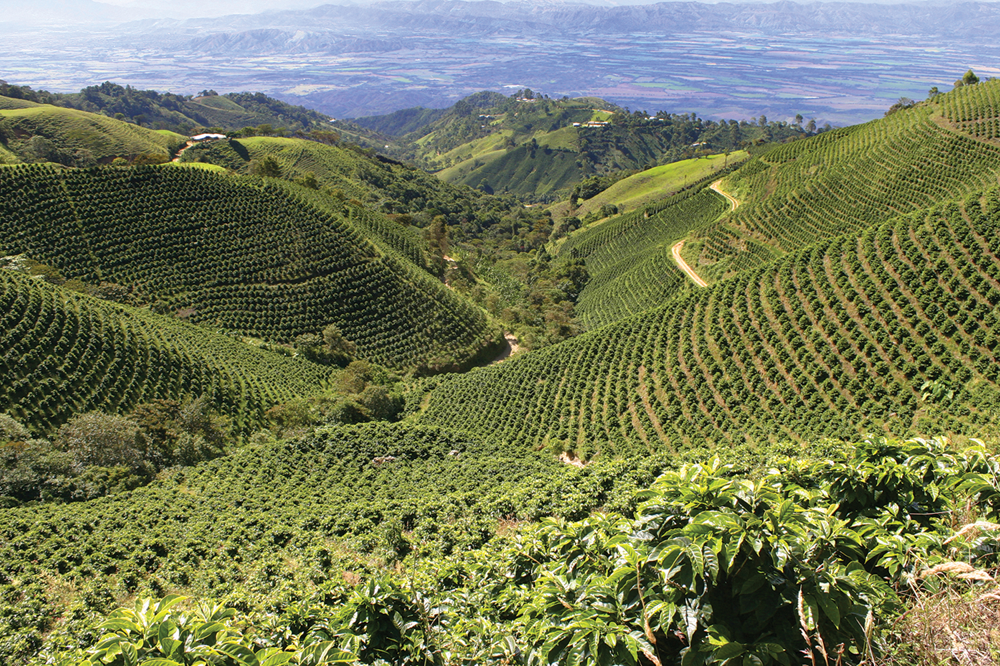

We want two or three extra pages, so this is second page.

This picture is coffee plantation from somewhere, taken from Wikimedia. First I had some other beautiful coffee plantation landscape, but then I remembered licences, I guess that is not OK, so I put this. It is not easy to find free coffee plantation landscape image.
This picture is coffee plantation in Peru, taken from here: https://www.mikocoffee.com/uk/drop-peru-coffee-production/peru-coffee-plantation/
<< Back to MAIN coFFee page